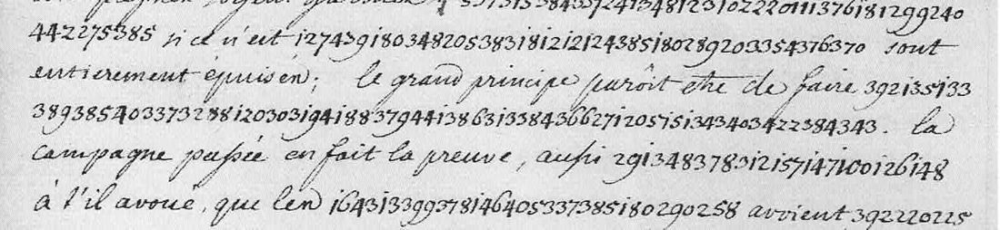

01 Three letters, two tables
| Record | Folio, date | Cipher | Read |
|---|---|---|---|
| R955 | f. 141, undated (1757–58, while the French held Hanau) | 89 groups, dotted, 202–586 | from the decipherment written below them |
| R957 | ff. 327–328, Bonn, 14 January 1759 | 210 groups in two unbroken runs | all but four groups |
| R956 | ff. 344–345, Bonn, 4 February 1759 | 343 groups in nineteen runs set inside clear sentences | all but about 16 groups |
In 1759 the digits run on with no separators. They divide into threes, which the lengths of the runs confirm. Four DECODE transcriptions had dropped or doubled digits; those runs were re-read from the scans.

02 The 1757 table, from its own decipherment
The clear lines on f. 141 repeat the cipher word for word: “on a délibéré ici dans une députation de Magistrat sur le parti à prendre au cas que les François fussent obligés d’abandonner Hanau, on a osé opiner pour la neutralité et conclure même; on garde cependant un profond secret là-dessus comme de raison.” Aligning the two gives values that rise with the alphabet: a 202/203, ab 205, an 216, ar 220, as 223, at 224, au 228, be 241, c 250, d 279, da 280, de 282/290, en 308, er 313, et 315, fu 337, gi 343, ha 355, i 364, l 387, le 388, les 389, li 390, ma 396, ne 411, o 422, on 435, p 447, po 453, pr 455, que 465, r 469, ra 471, re 472, s 480, su 488, t 494, ta 496, ti 500, tr 503, u 511, ur 512. Each letter heads its own section and is followed by its syllables. The common units have a second number.
03 Rebuilding the 1759 table
The 1759 numbers do not fit the 1757 values, but if the new table was built the same way, it has a strong constraint: a higher number never stands for an alphabetically earlier syllable. The solver (msolve.py) keeps one inventory index per observed number, sorted, and allows at most two numbers per syllable. It anneals the boundaries against a French character model (fr-1750-nospace, added to the shared lang/ registry), with a small bonus per decoded letter. As a control, a 274-group French passage encoded with a random alphabetical table was recovered verbatim. On the real 491 clean groups, one start in eight gave “la nouvelle convention on laisse le revenu… en réservant la souveraineté… l’impératrice”, and the other seven did not.
The key was then corrected by hand, run by run, against the French sentence each run sits in. For example, “avant que les campagnes soient garnies, on ne songe pas à faire des magazins, si ce n’est aux dépens des États de l’Empire qui sont entièrement épuisés”. The end of the table falls into place: x 438/439, y 441, z 442. So do word entries filed in their alphabetical slot: nous, pour, qui, roi, comte.

04 Bonn, 14 January 1759
… de l’administration; la nouvelle convention laisse les revenus à la [G…] en réservant la souveraineté à l’Impératrice. On promet de toujours [?] de la part des François. Dans cette supposition, sans que nous ayons aucun ordre de la cour à ce sujet, et cela cause beaucoup de mésintelligences. On vient de la part de la [G…] de mettre en possession de la principauté de Meurs le prince de Con[…] […] qui vous formez des prétensions sans prévenir seulement l’Impératrice, qui en est souveraine.
The Prussian lands on the Lower Rhine (Gueldre, Moers) were in French and Austrian hands from 1757. The passage records a convention that left their revenues to one party and the sovereignty to Maria Theresa. It also reports a grant of Moers made without informing her.
05 Bonn, 4 February 1759
Il est constant que l’armée du Prince de Soubise est dans le meilleur état qu’on puisse imaginer … avant que les campagnes soient garnies, on ne songe pas à faire des magazins si ce n’est aux dépens des États de l’Empire qui sont entièrement épuisés; le grand principe paraît être de faire subsister l’armée du roi y sans qu’il en coûte un sou. La campagne passée en fait la preuve, aussi le prince [name] a-t-il avoué que les contributions de la Gueldre avoient suffi à l’entretien de son armée, et qu’on avoit même transmis assez d’argent à l’armée de Contades pour subvenir aux frais du traitement des troupes pendant l’hiver, et que toutes les opérations de l’année passée n’avoient eu d’autre but. Le prince pense bien, mais le reste est malintentionné; outre cela il n’y a pas un officier général entendu à cette armée, excepté le duc de Broglio; le major général (?) des Liégeois de Vaut est intéressé et ignorant, et non l’intendant nécessaire pour mettre en œuvre le système que j’ai détaillé ci-dessus … D’ailleurs, homme non violent, je n’ai pas besoin de parler de Dumesnil; il est universellement connu pour être prussien, […] le prince Camille … Parmi les maréchaux de ce[…] il n’y a que [name] qu’on estime. Comme de notre côté nous ne pouvons pas résister aux plaintes fondées des États, et que les ordres de la cour nous obligent de faire des représentations … on a pris occasion de former des plaintes contre le comte de Pergen comme s’il n’agissoit pas conformément aux intérêts de la cause commune.
06 What remains uncertain
- 232 (twice, R957): a name filed under G, the body that receives the revenues and acts on Moers. Unread (I).
- 147 100 126 148 (R956): the prince who “avowed”. From the context it should be Soubise, but the numbers are out of alphabetical order, so this is probably a name group. Unread (I).
- 170 323 441 (R957) and 170 271 289 337 (R956): the syllables decode (con…, …il l’on) but the words do not resolve. Conjectural (M).
- 290 313 316 313 373 (R956): the one marshal “qu’on estime”. The syllables read la-n-ne-n-r and the name is not identified; the digit division here is uncertain in the scan. Unread (I).
- “on promet de toujours” and “supposition [pr] sans que” (R957) read awkwardly (C). “le major général” rests on a single number, 300 (C).
07 Sources
- Archives générales du Royaume, Brussels, Secrétairerie d’État et de Guerre, inv. 1236; images and transcriptions on DECODE, records R955, R956, R957 (transcribers SofPe 2019, XL 2020).
- No printed edition or earlier decipherment of these letters was found.
Transcriptions, solver, key and readings: swieten1757/ in the repository.